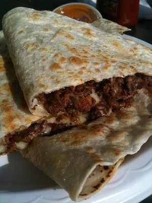

Burrito gigante de carne y queso

Los burritos son uno de los platos más versátiles de la cocina mexicana y tex-mex. Pero en los retos gastronómicos estadounidenses, las porciones pueden alcanzar tamaños descomunales. Esta versión lleva una gran tortilla de harina rellena con carne de vacuno, arroz, frijoles, queso, guacamole y salsa. El resultado es un burrito enorme y contundente, perfecto para nuestra categoría Tapa arterias.